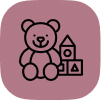

Взгляните на примеры ниже, узнаёте себя?
-
Низкая самооценка и комплексы; страх, что на самом деле вы никому не нравитесь и понравиться не можете; постоянная нервозность и неуверенность в своих словах и действиях.
-
Жизнь по шаблону - все события словно цикличны, вы проживаете один и тот же сценарий. Проблемы повторяются один в один и вы никак не можете разорвать этот круг.
- 
Вы по-прежнему помните обиды из детства и проецируете их на настоящее. Даже мелкую ссору можете принять близко к сердцу и сильно обидеться, часто жалеете и накручиваете себя по пустякам.
Узнали себя в каком-то из пунктов? И наверняка уже пытались “исправиться”, но ничего не получилось? Не надо себя за это корить! Ведь проблема намного глубже, чем кажется и её нельзя исправить простой самодисциплиной.

Ситуацию надо проработать, принять и отпустить, чтобы начать новую и счастливую жизнь. И я могу в этом помочь!
На личной консультации мы проработаем вашу проблему, поймём истоки и найдём решение. Свободно всего 5 мест, запись до конца недели. Если вы хотите изменить свою жизнь, записывайтесь прямо сейчас.
Консультация проходит в zoom и длится около часа. Подробный план встречи:
- 1. Небольшое знакомство. Можете рассказать немного о себе и задать вопросы мне, чтобы морально расслабиться.
- 2. Выявление проблемы. Глубинно обсуждаем, находим первопричину и создаём полную картину того, что вас беспокоит.
- 3. Определяем путь решения. Создаём поэтапный план, который в итоге поможет справиться с проблемой и зажить счастливо.
Почему мне можно довериться?
-
Психотерапевт по образованию, но работаю не только на психологическом, но и на энергетическом уровне. Ведь проблема зачастую не только “в голове”, но и в вашем энергетическом поле
-
Более 10 лет опыта в сфере энергетического восстановления чакр и ауры. Сразу вижу на уровне какой чакры есть проблема и знаю, как её решить.
-
Умею находить подход к людям и мотивировать на результат. Уже 3 года работаю наставником в нескольких курсах по саморазвитию.
-
Использую коучинг, гипносессии, НЛП-техники для работы с сознанием и подсознанием, что помогает добиться результата даже в очень сложных случаях.
-
Моя главная миссия - сделать как можно больше людей счастливыми и открытыми миру. Именно поэтому я выделяю время на бесплатные консультации.
До счастливой жизни осталось сделать всего один шаг и я верю, что вы на него способны!
Отзывы
Мирра, благодарю вас за работу по освобождению от обид. Я не знала, как будет все проходить, какие будут состояния во время процесса и после. Но чувствовала, что сама не могу сдвинуться с места и зависла в состоянии " ничего не происходит". Определенно, нужен был волшебный пендель. Эффективный. Перед занятием началась тревога, что то во мне стало метаться, чуя перемены. Сам процесс прошел легко, в вашем поле я чувствовала, что в надежных руках и работа идет наилучшим для меня образом. Техника работа не похожа на те, что мне знакомы. Временами было сопротивление, но потом ощущение облегчения и спокойствия. Глубокая работа, никаких воспоминаний, что было, переживаний в сотый раз травматичных ситуаций нея долго работала раньше с психологом и там было именно " ковыряние болячек, поиом временное облегчение", а скорее наблюдение со стороны и взгляд на ситуацию по новому. Я прошла несколько состояний, в голове действительно началась " перепрошивка". Появилось больше энергии.
Екатерина
Ваша работа невероятно ценна! Высочайший уровень на котором Вы работаете, качество работы, Ваш подход. Психология которая предлагает похожие услуги не дает такого результата и так быстро, а стоит гораздо выше. Конечно хочу страхи проработать. Конечно, давайте со следующей недели или после. Вы очень добрая и классная! Очень рада что попала к Вам! Очень! Благодарю за порцию здоровья
Наталья
Мирра! Благодарю Вас за прорабатку отношений с мамой. До сеанса мои чувства к маме доходили даже до ненависти. Сейчас, после проработки я чувствую только любовь к маме. Этот сеанс изменил меня, я другой человек. Я больше не жертва, наоборот я чувствую себя ведущей в отношениях. Чувствую себя мудрее, сильнее, увереннее. Сейчас я хочу давать маме любовь бесконечно чтобы она купалась в любви, окружить заботой мамочку, быть внимательной к ней. Это чудо. В своем сердце чувствую больше энергии, как часть сердца была закрыта а сейчас там сладкое счастье, свободно течет энергия. Раньше я пробовала сама наладить отношения, но во мне всегда побеждала боль, обида. Сейчас боли нет.(!!!!!) И мама изменилась ко мне! Между нами любовь, понимание и доверие. Наши больные отношения исцелились. Я счастлива! Благодарю
Надежда
Дорогая и любимая Мирра!Я так рада, что решилась к вам на отработку пойти.Я хотела найти хорошую работу, а в итоге сейчас имею желаемую работу, о которой только мечтала!И это всего за неделю после встречи с вами, это волшебство!Вы творите невероятную работу! Ваши встречи в скайпе, плюс энергетическая работа, все вместе творят поразительное!У меня словно крутят выросли!Я хочу к вам отработать стеснение, убрать обиду на маму, и ещё вы говорили, что можно поработать для создания лучшей версии себя, мне это сейчас очень нужно!!Благодарю от всей души
Татьяна
Уже прошло две недели после нашей с вами встречи и отработки обиды на первого мужа. Мои отношения с моим нынешним и любимым мужем вышли на новый уровень. Я перестала обижаться и искать в нем плохие качества. Стараюсь быть поддержкой, и меняется он! Это поразительно! Работаете со мной, а он на работе и шлёт мне любовные смс. И мне так приятно.Я понимаю, что сама перекосила на нас мои обиды с первым мужем, и сейчас после отработки у нас такой романтик!! И секс!!! Даже боюсь радоваться, и делиться. Но отношения у нас какому толькт познакомившихся влюблённых. Я вам очень благодарна. Не знала что так возможно
Ольга